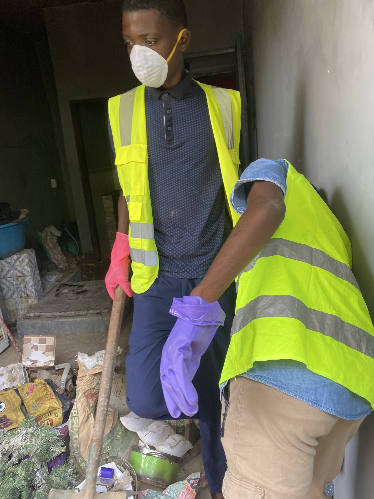
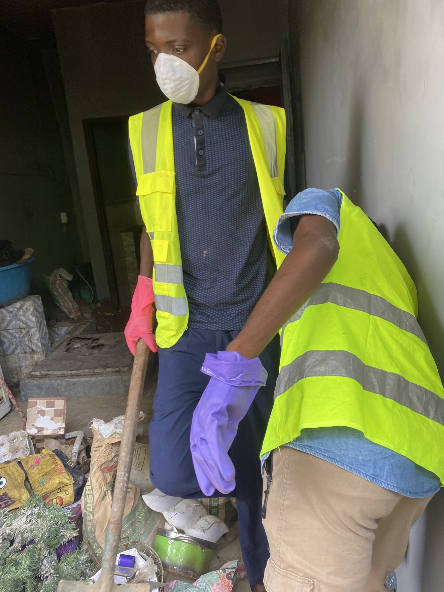

Nettoyage de maisons
Nous proposons un service complet de nettoyage pour les maisons : sols, vitres, murs, sanitaires, cuisines, etc. Que ce soit pour un nettoyage ponctuel ou régulier, nous assurons un travail soigné, rapide et efficace.
- Produits adaptés et non toxiques.
- Respect de vos objets personnels.
- Intervention discrète et professionnelle.